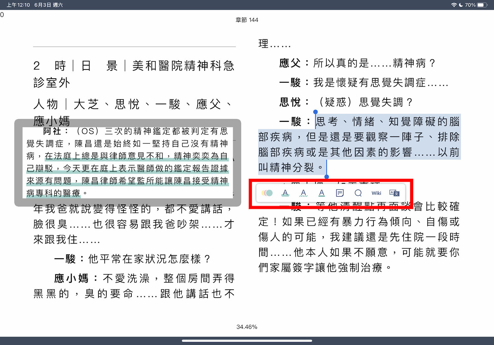

[3C] HyRead3 app 三種電子書形式的筆記方式
發布於 June 2, 2023 • 4 分鐘 • 1724 字
買了 iPad 之後偶爾會用 HyRead3 這個 APP 登入圖書館看電子雜誌，在看英文學習雜誌的時候也很習慣會用 apple pencial 在上面寫答案。前幾天心血來潮借了一本跟網路行銷有關的書，結果發現竟然不能劃記筆記！只能把頁面加入書籤，查了網路資料跟詢問客服之後才搞懂他們針對電子書的三種不同格式有不同的筆記方式～
原本在網路上查詢到 HyRead 有將筆記匯出到 Evernote 的功能，但後來發現這個功能應該只有 HyRead 電子紙閱讀器有，用 iPad 或手機下載 APP 是沒有這個功能的，所以如果是想看 iPad 怎麼匯出筆記的可以先退出了🤣
iPad 可以開啟 app 後直接搜尋你有帳號的圖書館，登入帳密後就可以借閱電子書，非常的方便～
我前幾天是搜尋《網路行銷的12堂關鍵必修課》這本書，iPad 顯示他是 EPUB 格式，EPUB 就是 Electronic Publication 的縮寫，是蠻常見的電子書格式。我當時想要標記重點的時候發現找不到筆的功能、長按也無法標記，只能把該面加入書籤，上網查了也的確有人分享 EPUB 格式可以圈選標記段落，但怎麼樣都找不到解法的情況下我只好求助客服。
經過客服說明才了解 EPUB 又分為兩個格式，一個是「EPUB 版式」、一個是「EPUB 流式」。通常版式用在圖片比較多的書籍，為了排版的美觀，這種版式電子書圖片和文字的排列都是固定好的，只能將你正在閱讀的頁面「整頁」加入書籤來做重點記錄。而小說類等文字為主的書籍則多是流式，流式可以長按之後圈選段落並作標記，也能以增加 memo 的方式輸入筆記，調整字體大小也不需要拖移畫面來閱讀，當然加入書籤也是沒問題。
簡單一點來說明的話，流式可以想像成是一份 Word 文件，你可以放大或縮小字體，而放大字體後，每一行的文字相對變少，行數與頁數會增加；相反地，縮小字體後每一行的文字相對變多，行數跟頁數就變少了。版式的話則像是一張圖片，當你選擇放大的時候，是整張圖一起放大，縮小時也是整張圖一起變小，所以並不影響行數和頁數，但相對的就是可能放大後會有一部分超出你可以閱讀的邊界（例如超出 iPad 畫面），所以可能會需要拖曳畫面來閱讀完整內容。

EPUB 流式電子書長按文字後就能選取要標記的範圍，跟手機、iPad 要複製文字的操作方式一樣。除了可以選擇標記的顏色顏色，還能選擇是要畫螢光筆式的重點、虛線、還是底線，也可以加入便條紙。選取文字後也可以選擇要搜尋關鍵字、在維基百科查詢或是翻譯內容，但目前翻譯的語言只能選英文跟簡體中文。
標記的內容可以在左上角的列表符號中切換，而切換文字大小則是在右上角，比照上圖可以發現文字變小後，行數也變少，排版改變了。
而 PDF 版本的電子書就可以用筆來畫記重點跟直接在上面寫字，註記列表內會紀錄你有劃記過後的頁面，不過若是想要在註記列表內可以看到文字的說明就要以增加 memo 的方式輸入筆記內容，和 EPUB 兩個版本一樣都能將特定頁面加入書籤。
點右上角的筆可以開始劃記，按順序有橡皮擦、透明度切換（半透明就類似螢光筆的使用方式）、粗細切換、直線切換是選了直線畫出來就是直線，另外一個就是你怎麼畫就長怎麼樣，然後畫筆旁邊可以切換成便條紙模式。
點選左上角的列表圖示可以切換到註記列表，這邊會把你有劃記過或是有貼便條紙的頁面都列出來，下圖中顯示的「English Only」是寫在便條紙內才會出現的，但目前只有寫英文會顯示。
但我覺得這裡有 bug，因為我試了好幾次，只有一開始建立便利貼時就寫英文或是符號才會顯示，便利貼裡面中英混雜、寫過中文再改回全英文或是同一面第一張便條紙是上述兩種狀況，第二張是一開始就全英文，文字都不會顯示在註記列表那邊。
然後就是在 iPad 的 HyRead APP 內直接搜尋圖片他只會顯示 EPUB 格式，不會顯示他是流式還是版式，要網頁版的才會標示。
網頁版基本上可以在各圖書館的網頁中找到，以國立台灣圖書館為例子，就是在「資源探索」>「數位資源」>「雲端閱讀電子書整合查詢系統(計次租賃)」裡面，搜尋後左側欄「資料庫/網站」勾選「HyRead ebook」就可以。
不過通常更快的方式就是直接搜尋「圖書館+hyread」就可以了！記得要有借閱證，並開通線上登入的圖書館才能使用數位資源喔～